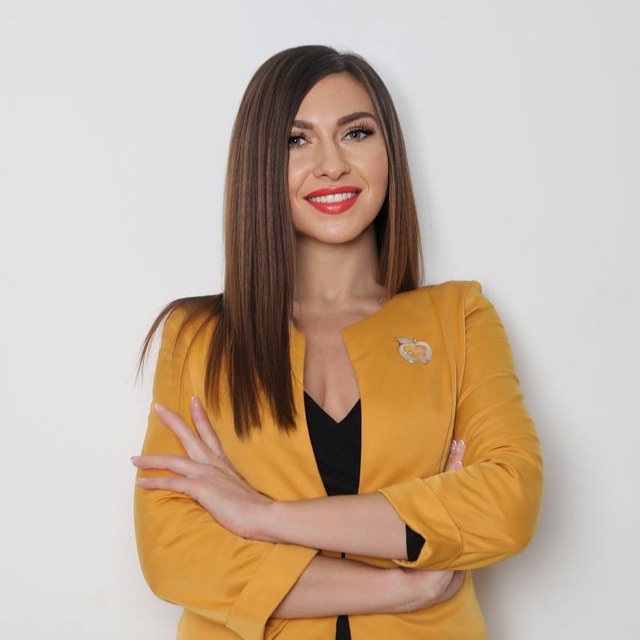

Сооснователь проектаПрикладная нейробиология и живая практика. Дарья помогает выключить шум в голове и сменить состояние, из которого собирается вся жизнь: доход, тело, отношения, энергия.
В центре её внимания человек: как мозг, гормоны и тело договариваются между собой и задают жизнь. Доход, отношения, здоровье, самоощущение.
Дарья изучает это не первый год. Как складываются нейронные цепочки, почему нас тянет в одни и те же сценарии, как одна мысль запускает каскад в теле, а одно состояние либо закрывает все двери, либо открывает те, о которых ты и не подозревал.
Ей интересны не красивые слова, а конкретика: как перестроить нейронные цепочки, свести тело и голову в один такт, тронуть гормональные рычаги, чтобы жизнь пошла иначе. В ход идут нейробиология, эндокринология, квантовая физика, исследования сознания и сотни часов живой работы с людьми.
Быстрые честные сдвиги там, где обычно уходят десятилетия. Без бесконечных копаний в прошлом. Она работает с состоянием и мозгом напрямую, пока тело и нервная система получают новую программу.
Мне нравятся быстрые честные изменения. Когда за месяц меняются не только инсайты в голове, но и энергия, тело и жизнь вокруг.Дарья Ростовцева
Мозг, гормоны, нервная система. Дарья изучает их годами и сводит разрозненные знания в одну рабочую картину.
Свою историю Дарья рассказывает сама, без глянца. Через эти этапы росла глубина и та практика, которой она делится сейчас.
Родилась в тёплом краю, выросла в Красноярске. С детства лечила руками, сама не понимая как это работает. С восьмого класса ходила на психологию, и это по-настоящему захватывало.
Окончила Торговый институт по маркетингу. Училась хорошо, хотя от обилия цифр было скучно. На сменах официанткой и барменом было весело и денежно.
На одной из смен прочитала «Алхимика» Коэльо. Книга перевернула взгляд на мир, и началось жадное чтение о том, как устроены человек, реальность, сознание и квантовая физика.
Два года в банке: жёсткий график с девяти до семи, чужие планы, система не для неё. Там же исполнила мечту и купила первую машину. А потом за секунду уволилась.
Через неделю уехала работать аниматором в Египет. Зарядки у бассейна, конкурсы, друзья со всего мира. Уже тогда научилась не предавать себя ради чужого одобрения.
Родила сына одна. Декретные восемь с половиной тысяч, лишний вес, ноль поддержки, на том конце трубки «ребёнку нужна любовь» вместо помощи. Из этой точки начался разворот к себе.
Простая идея с цветами из шаров выросла в дело: субсидия от государства, декор праздников, флористика, свадьбы. Через пару месяцев её знала вся округа, за пять лет, полгорода.
Всегда мечтала о тепле и не стала себя отговаривать. Посмотрела Сочи и через две недели переехала. Три года в турфирме в кайф, а потом знакомое выгорание, из которого начался новый виток.
Тета-хилинг на Бали не лёг, копаться в прошлом не хотелось. А в американской школе Access Consciousness всё оказалось легко и действенно. Инструменты развернули жизнь: работы меньше, дохода больше.
Захотела статус CF, для которого нужно пройти обучений на два с лишним миллиона. За полгода прошла весь список сама и стала одним из немногих сертифицированных фасилитаторов в России. Так поняла: решаешь по-настоящему, и всё сбывается быстро.
Больше шести лет практики с международными лицензиями. Освоила нумерологию и была наставником в крупнейшей школе России, потом переросла её. Побывала в четырнадцати странах, во многих не по разу.
Сегодня всё сходится в одно: человек и архитектура его сознания. Как мозг, гормоны и тело договариваются и задают жизнь. Отсюда родился этот портал.
Живая работа с людьми один на один и в группах. Через её программы и сессии прошли тысячи человек, и жизни менялись на её глазах.
Статус CF в международной школе Access Consciousness, один из немногих в России. Больше шести лет ведёт обучения с международными лицензиями.
Работала в крупнейшей школе нумерологии России и выводила студентов на новый уровень. Сейчас берёт эти знания как часть общей картины.
Фитнес-инструктор, понимает связь тела, гормонов и состояния изнутри. Сама прошла путь от нуля до формы.
Нейробиология, эндокринология, нервная система, исследования сознания. Учится без остановки, а Алексей сверяет каждый факт с наукой.
От восьми тысяч декретных до своих проектов, переездов и свободы. Даёт людям ровно то, через что прошла лично.
Дарья лично. Она сама разрабатывает практики, ведёт эфиры и работает с людьми один на один и в группах.
Больше шести лет практики и сотни часов работы с людьми, международные сертификации и постоянное обучение. Через её программы прошли тысячи человек.
Торговый институт по маркетингу, обучение на фитнес-инструктора, статус сертифицированного фасилитатора CF в Access Consciousness, наставничество в крупнейшей школе нумерологии России и непрерывное самообразование в нейронауке.
В основе работа с мозгом, гормонами и нервной системой, опора на нейробиологию и эндокринологию. Алексей сверяет каждый факт с исследованием, поэтому за практикой стоит проверяемый механизм.
Можно прийти на личную консультацию под свой запрос или в групповую программу. Ниже кнопка, дальше поможем с выбором формата.
Личная консультация под твой запрос или работа в группе. Напиши, и подберём формат.
Смотреть программы